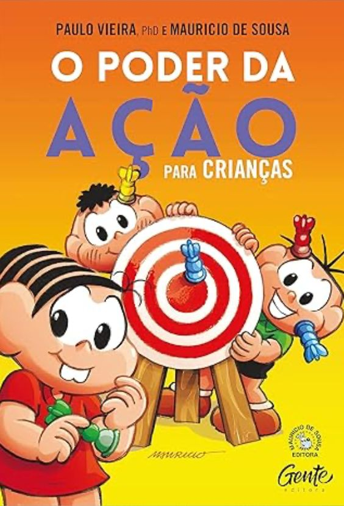

O poder da ação para crianças - Paulo Vieira
Sinopse
Turma da Mônica e Paulo Viera se reúnem no Bairro do Limoeiro para ensinar pais, mães e crianças sobre autorresponsabilidade! Mais de 40 milhões de pessoas já conhecem Paulo Vieira e tiveram sua vida transformada pelos ensinamentos dele. Agora ele pediu a ajuda da turminha mais famosa do Brasil para mostrar a todas as crianças que a vida pode e deve ser incrível, completa e cheia de conquistas! A chave para isso é formada por três conceitos importantes: a autorresponsabilidade, a gratidão e o foco. Mônica, Cascão, Magali, Cebolinha e outros moradores do Bairro já aprenderam como usar essas três palavras no dia a dia e convidam você a fazer o mesmo, acompanhado de muita diversão e amizade.